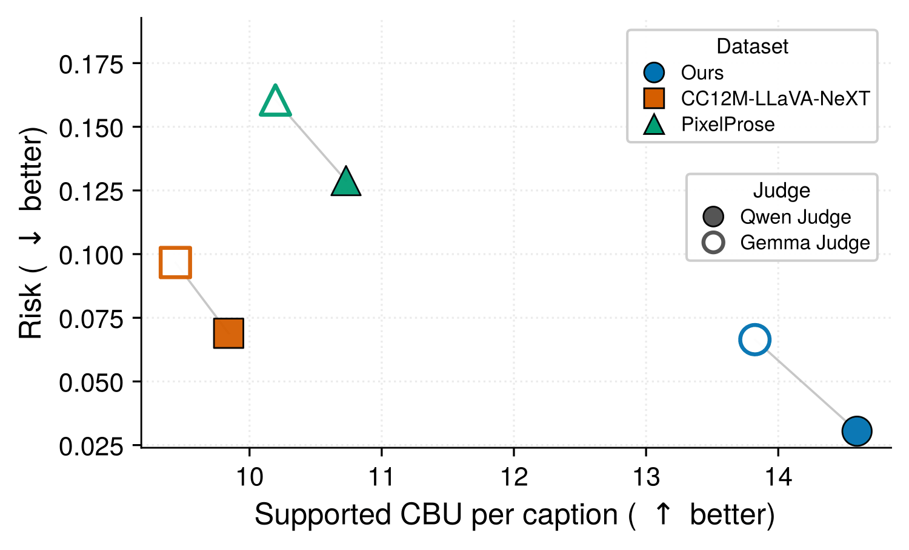
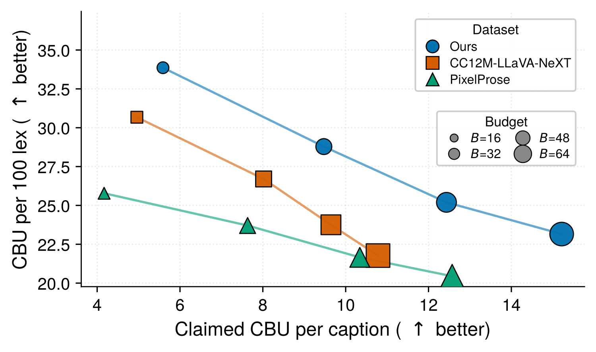

TL;DR
In plain words
- AI image generators learn by looking at millions of pictures, each with a short description. Today most of those descriptions are written by another AI, not by people.
- But are those AI-written descriptions any good? Until now, finding out meant training a whole image generator, like baking an entire cake just to check whether the flour is fresh.
- We built a simple check-up instead. One part works like a teacher noticing that a stack of essays all begin with the same sentence: we count how often descriptions repeat themselves.
- Then we read the first 64 words of each description. Does it sound like what people type when they ask for an image? How many concrete things does it say, and is each one really in the picture? Two AI judges check that last part, and we compared them with human annotators.
- Our descriptions say more true things about each picture, and fewer wrong things, than existing long descriptions of the same pictures. The instructions make the difference: the same AI, simply told to “describe this picture in detail”, says about a quarter fewer true things.
- We are sharing descriptions for about 490 million images, plus the check-up tool, so anyone can test their own.
![A snow-covered path between wooden rail fences and snow-laden trees beside caption excerpts. Two public caption styles show their describe-style frames highlighted: a long-form description (‘possibly’, ‘cuts through the center of the frame,’, ‘leading the eye towards’) and a broad-frame template (‘This image displays’, ‘There are’, ‘There is’). A box reads: Every captioning policy injects bias; the policy decides which biases enter the corpus. Below, the prompt-aligned Ours excerpt highlights the dominant subject, scene structure, objects, lighting and camera framing.](assets/img/fig1-style-v6.webp)
Same image, different captions
VLM captioners inherit describe-style frames such as third-person openers (e.g., The image shows…) and broad-frame templates (This is a [adjective]…), caption-only scaffolds that sit outside the register of user prompts. Our policy injects the register of user prompts by one simple rule: write the caption as a user writes a prompt, from the dominant subject through scene structure to camera framing.
Long-form describe
possibly a driveway, ...
cuts through the center of the frame, ...
leading the eye towards a wooden fence ...
Broad-frame template
This image displays: ...
There are trees on both sides of the path. ...
There is a stone wall on the right ...
= describe-style frame
Ours (prompt-aligned)
A snow-laden winter landscape unfolds along a narrow, tire-tracked path ... flanked on both sides by weathered wooden rail fences ... sunlight flares through gaps in the canopy, ... Shot from a low, eye-level perspective, ...
Every captioning policy injects bias; the policy decides which biases enter the corpus.
What the audit measures
At a fixed text budget of B = 64 the audit reports a five-axis profile spanning prompt-side coverage, image-conditioned faithfulness, and caption-surface health, with claimed controllable basic units (CBU) as the common claim unit. It runs four passes over source-aligned rows: it cuts every caption to the text budget B, computes deterministic text statistics on the resulting window, extracts the CBUs the window states, and re-asks each CBU against the paired image. A CBU is one claim in a caption (object, attribute, relation, count, style, camera, lighting or text-rendering), and supported yield and risk read the same (claim, image) pairs: yield counts the claims the Judge finds supported by the image, and risk is the share it answers no for.
| Axis | Property | Metric | Rows |
|---|---|---|---|
| Text budget | Coverage | Avg. lex, B-eligibility | 1M |
| Prompt-pool support | Coverage | prompt-mass support ↑, n-gram JSD ↓ | 250k |
| Claimed density | Coverage | CBU/cap ↑, CBU/100 lex | 5k |
| Surface concentration | Health | top-100 prefix mass ↓, distinct-3 ↑ | 1M |
| Support and risk | Faithfulness | supported yield 𝔼[s] ↑, risk ρ ↓ | 5k |
Key results
- +3.39 to +6.36
- more image-supported claims per caption than public reference captions of the same images, at the same 64-word budget
- −0.046 to −0.159
- lower share of stated claims that the image does not support, under both the Qwen Judge and the Gemma Judge
- +3.0 to +3.6
- more image-supported claims per caption when the captioner is the same and only the captioning policy changes
- 87 of 111
- judgments by Human annotators find our claims supported by the image (78.4%); none is an explicit no
Four cross-corpus pairs
Across the four cross-corpus pairs, the released surface raises claimed controllable basic units (CBU) per caption by +2.91 to +6.14, and both Qwen and Gemma Judges report higher supported CBU per caption (+3.39 to +6.36) and lower unsupported risk (−0.046 to −0.159).
| Dataset | CBU/cap ↑ | Qwen Judge | Gemma Judge | ||
|---|---|---|---|---|---|
| Sup. CBU/cap ↑ | Risk ↓ | Sup. CBU/cap ↑ | Risk ↓ | ||
| DataCompvs. Recap-DataComp | 10.44→14.45 | 8.49→13.73 | 0.177→0.035 | 8.00→12.94 | 0.219→0.081 |
| LAION-popvs. LAION-pop-Llama | 11.91→14.82 | 10.80→14.22 | 0.077→0.031 | 10.22→13.61 | 0.113→0.060 |
| PD12Mvs. PD12M released | 9.78→15.02 | 8.61→14.29 | 0.103→0.034 | 8.23→13.53 | 0.131→0.066 |
| Danbooruvs. Danbooru-Florence | 8.18→14.33 | 6.38→12.74 | 0.217→0.058 | 6.15→11.85 | 0.235→0.094 |
One captioner, two policies
With the captioner fixed, this policy alone raises supported CBU per caption by +3.0 to +3.6 over a plain detailed-caption instruction. The control fixes the captioner Vc = Qwen3.5-35B-A3B-FP8 and its decoding and swaps only the policy π: the same captioner writes a naive surface on the same 4,494 CC12M and 4,775 DataComp images under the single instruction of Recap-DataComp, “Please generate a detailed caption of this image. Please be as descriptive as possible.”
| Dataset | Surface | Surface stats | Qwen Judge | Gemma Judge | |||
|---|---|---|---|---|---|---|---|
| CBU/cap ↑ | CBU/100lex | Sup. CBU/cap ↑ | Risk ↓ | Sup. CBU/cap ↑ | Risk ↓ | ||
| CC12M | Ours | 15.21 | 23.16 | 14.60 | 0.030 | 13.82 | 0.066 |
| Naive Qwen3.5-35B-A3B | 11.32 | 17.26 | 11.03 | 0.022 | 10.61 | 0.045 | |
| DataComp | Ours | 14.60 | 22.23 | 13.90 | 0.036 | 13.07 | 0.080 |
| Naive Qwen3.5-35B-A3B | 10.95 | 16.66 | 10.56 | 0.026 | 10.07 | 0.057 | |
A long-vs-dense frontier on CC12M
At B = 64, Ours holds the highest supported yield and the lowest risk of the long-form surfaces; PixelProse, at ≈89 lex, carries the highest risk (ρ = 0.129/0.161 under Qwen/Gemma), and CC12M-LLaVA-NeXT sits between. Across B ∈ {16, 32, 48, 64} on all 4,494 aligned images, claimed CBU per caption grows and CBU per 100 lex declines on every long-form surface, and Ours leads them on both readings at every budget (5.59 → 15.21 CBU per caption, 33.9 → 23.2 per 100 lex).


The paper adds human verification of image support, per-claim-type results, and the surface diagnostics behind these numbers.
Dataset
The corpus is a Hugging Face collection of our generated captions for the nine source families, joined by row-level keys to the source releases that hold the images and the reference recaptions. Caption generation cost is ≈12.7k H200 GPU-hours.
| Source family | Original supervision | Ours scale | Paired reference surface(s) |
|---|---|---|---|
| Photorealistic / web | |||
| DataCompBootsofLagrangian/datacomp-recap-qwen3p5-35b-a3b | web image–text pairs | ≈325.5M | Recap-DataComp |
| CC12MBootsofLagrangian/cc12m-recap-qwen3p5-35b-a3b | web alt-text | ≈11.5M | CC12M-LLaVA-NeXT, PixelProse, CC12M-Qwen3-VL† |
| LAION-popBootsofLagrangian/laion-pop-recap-qwen3p5-35b-a3b | web alt-text | ≈0.4M | LAION-pop-Llama |
| PD12MBootsofLagrangian/pd12m-recap-qwen3p5-35b-a3b | Florence-2 + metadata | ≈12.4M | PD12M released |
| CommonCatalogBootsofLagrangian/commoncatalog-cc-by-recap-qwen3p5-35b-a3b | BLIP-2 captions | ≈14.6M | — |
| LAION-AestheticsBootsofLagrangian/laion-aesthetics-recap-qwen3p5-35b-a3b | web alt-text | ≈23.7M | — |
| LAION-HighRes-AestheticBootsofLagrangian/laion-highres-aesthetic-recap-qwen3p5-35b-a3b | web alt-text | ≈82.7M | — |
| Megalith-CC0BootsofLagrangian/megalith-cc0-recap-qwen3p5-35b-a3b | Florence-2 captions | ≈8.1M | — |
| Anime / booru | |||
| DanbooruBootsofLagrangian/danbooru-recap-qwen3p5-35b-a3b | booru tags + metadata | ≈11.3M | Danbooru-Florence |
Load the captions
This example streams the LAION-pop captions with the datasets library, as on its dataset card.
from datasets import load_dataset
captions = load_dataset(
"BootsofLagrangian/laion-pop-recap-qwen3p5-35b-a3b",
split="train",
streaming=True,
)
row = next(iter(captions))
print(row["image_shard"], row["image_member"], row["caption_text"])- License. Captions: CC-BY-4.0. Code: Apache-2.0. Source images and original captions keep the licenses of their source releases.
- Personal information. Captions are released as generated: the captioner transcribes legible text, so a caption can carry a name, a contact detail, or an identifier that the source image shows. The text stays unmodified so that each user applies the filter that fits their use; every dataset card documents this and routes removal requests through the repository's discussion page with the row keys.
BibTeX
@inproceedings{oh2026matchedbudget,
title = {A Matched-Budget Audit Framework for Recaptioned Image-Text Supervision Distributions},
author = {Oh, Giyeong and Park, Junghun and Bae, Yuhan and Yu, Youngjae},
booktitle = {Conference on Neural Information Processing Systems, Evaluations and Datasets Track},
year = {2026},
url = {https://openreview.net/forum?id=JobgYHJvPo}
}